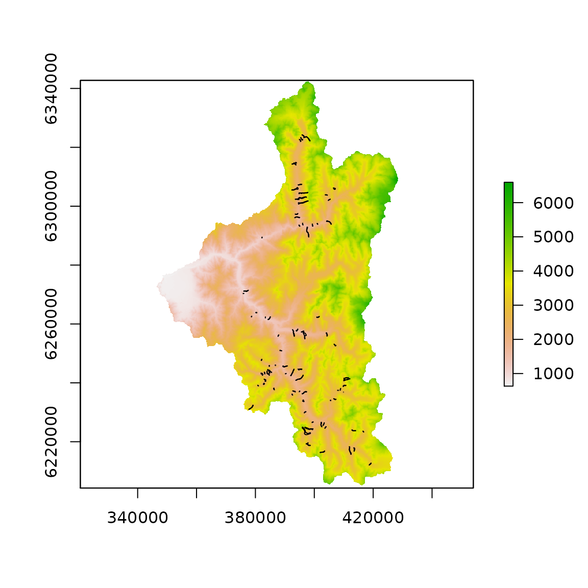
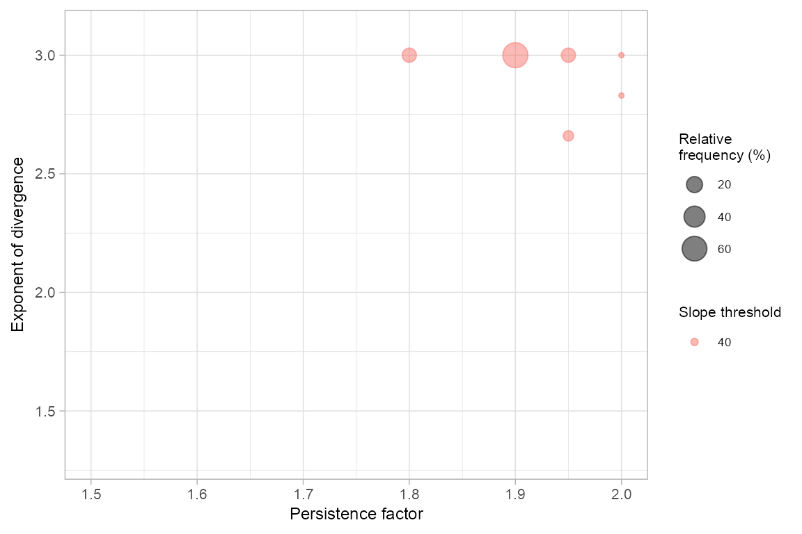
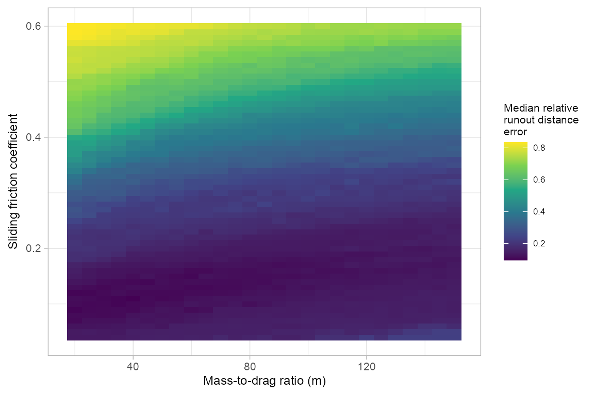
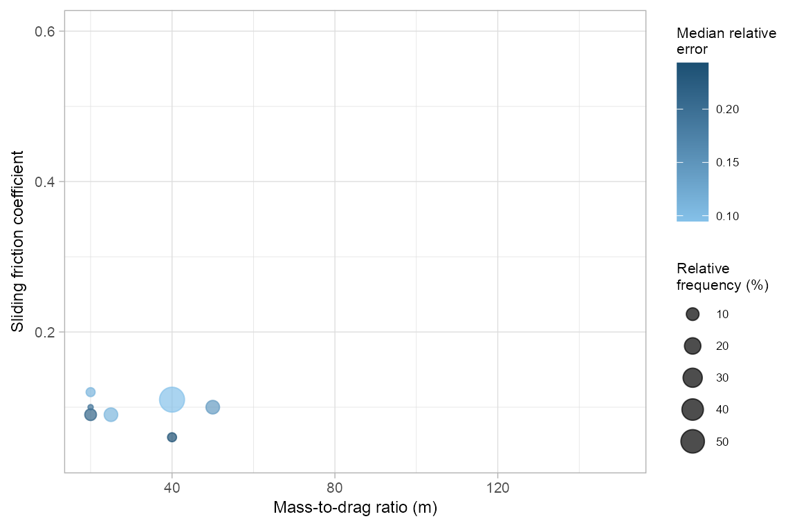

gpp_rw_pcm_regional_optimization.RmdThe runout.opt package was developed for automatic parameter selection for single event and regional runout modeling using the random walk and PCM components of the Gravitational Process Path (GPP) Model tool in SAGA-GIS. The optimization procedure uses a two-stage approach, where we first optimize the random walk model to find the ‘best’ simulation of runout path, and then plug-in these values to the PCM model to optimize for runout distance. The performance of the runout path is based on the area under the receiver operating characteristic curve (AUROC), and runout distance is based on a measure of relative error.
This vignette
To start, we will load all the necessary packages and data. The runout.opt functions are made to work with RasterLayer, SpatialPointsDataFrame and SpatialPolygonsDataFrame objects from the raster and sp packages.
We are using an 12.5 m spatial resolution DEM. The debris-flow runout track and source point that we will use for runout model optimization are one of many stored in shapefile. So, we select a single runout track, and the corresponding source point for this example.
library(runout.opt) library(raster) library(rgdal) library(sp) library(Rsagacmd) # Load digital elevation model (DEM) dem <- raster("elev_alos_12_5m.tif") # Load runout source points source_points <- readOGR(".", "debris_flow_source_points")
#> OGR data source with driver: ESRI Shapefile
#> Source: "/home/jason/Data/Chile", layer: "debris_flow_source_points"
#> with 541 features
#> It has 17 fields# Load runout track polygons and assign object ID based on row number runout_polygons <- readOGR(".", "debris_flow_polys_sample")
#> OGR data source with driver: ESRI Shapefile
#> Source: "/home/jason/Data/Chile", layer: "debris_flow_polys_sample"
#> with 100 features
#> It has 9 fields
The runout simulation is computed in SAGA-GIS. To do this, we are coupling R with SAGA-GIS using the Rsagacmd package. Each time we load this package we need to initiate a SAGA-GIS geoprocessor object, which generates functions in R to SAGA-GIS libraries and tools. We only need to load the Geomorphology library (i.e., sim_geomorphology) to access the GPP tool. This is also faster than loading all of the SAGA-GIS libraries (e.g., saga_gis())
saga <- saga_gis(opt_lib = "sim_geomorphology")
In our first stage of optimization, we will set up vectors to define our grid search space for the random walk runout path model component. This is an exhaustive list of the parameters that will be tested.
steps <- 11 rwexp_vec <- seq(1.3, 3, len=steps) rwper_vec <- seq(1.5, 2, len=steps) rwslp_vec <- seq(20, 40, len=steps) rwexp_vec
#> [1] 1.30 1.47 1.64 1.81 1.98 2.15 2.32 2.49 2.66 2.83 3.00
rwper_vec#> [1] 1.50 1.55 1.60 1.65 1.70 1.75 1.80 1.85 1.90 1.95 2.00
rwslp_vec#> [1] 20 22 24 26 28 30 32 34 36 38 40We will use parallelization to speed up our computations using the foreach package. This loop will compute performances for all possible parameter combinations for each runout polygon and store them as a list. In our case, this is our rw_grid_search_multi object. Depending on the number of runout events and the grid search space size, this computation can take some time. The rwGridsearch function has an option save_res = TRUE that allows us to save the grid search results for each runout individually. This is useful in the case where processing fails since it avoids the need to re-run the grid search for all runout events.
library(foreach) # Define which runout polygons are used for optimization polyid_vec <- 1:100 # Set up cluster cl <- parallel::makeCluster(7) doParallel::registerDoParallel(cl) # Run grid search loop rw_grisearch_multi <- foreach(poly_id=polyid_vec, .packages=c('rgdal','raster', 'rgeos', 'ROCR', 'Rsagacmd', 'sf', 'runout.opt')) %dopar% { .GlobalEnv$saga <- saga rwGridsearch(dem, slide_plys = runout_polygons, slide_src = source_points, slide_id = poly_id, slp_v = rwslp_vec, ex_v = rwexp_vec, per_v = rwper_vec, gpp_iter = 1000, buffer_ext = 500, buffer_source = 50, save_res = FALSE, plot_eval = FALSE) } parallel::stopCluster(cl)
#> [1] "rw_gridsearch_multi"To find the optimal parameter set, we will aggregate the performance values of each runout event across grid search space using the median value.
rw_opt <- rwGetOpt(rw_gridsearch_multi, measure = median) rw_opt
#> rw_slp_opt rw_exp_opt rw_per_opt rw_auroc
#> 1 40 3 1.9 0.9339073We can perform spatial cross-validation to test the transferability of optimal parameter sets. This is done using the k-means partitioning approach from the sperrorest package. In our example, we will perform 5-fold spatial cross-validation with 10 repetitions.
Additionally, we can visualize (plot_freq = TRUE) the relative frequency of optimal parameter sets from all spatial cross-validation iterations.
rw_spcv <- rwSPCV(x = rw_gridsearch_multi, slide_plys = runout_polygons, n_folds = 5, repetitions = 10) freq_rw <- rwPoolSPCV(rw_spcv, plot_freq = TRUE)

freq_rw#> slp per exp freq rel_freq median_auroc iqr_auroc
#> 1 40 1.95 2.66 3 6 0.8849232 0.000000000
#> 2 40 2.00 2.83 1 2 0.9422294 0.000000000
#> 3 40 1.80 3.00 7 14 0.9493766 0.002865541
#> 4 40 1.90 3.00 31 62 0.9351405 0.014989661
#> 5 40 1.95 3.00 7 14 0.9071155 0.028125851
#> 6 40 2.00 3.00 1 2 0.9501914 0.000000000We can now plug-in the random walk optimal parameter set, and optimize for runout distance using the PCM model component.
# Define PCM model grid seach space pcmmd_vec <- seq(20, 150, by=5) # mass-to-drag ratio (m) pcmmu_vec <- seq(0.04, 0.6, by=0.01) # sliding friction coefficient pcmmd_vec
#> [1] 20 25 30 35 40 45 50 55 60 65 70 75 80 85 90 95 100 105 110
#> [20] 115 120 125 130 135 140 145 150
pcmmu_vec#> [1] 0.04 0.05 0.06 0.07 0.08 0.09 0.10 0.11 0.12 0.13 0.14 0.15 0.16 0.17 0.18
#> [16] 0.19 0.20 0.21 0.22 0.23 0.24 0.25 0.26 0.27 0.28 0.29 0.30 0.31 0.32 0.33
#> [31] 0.34 0.35 0.36 0.37 0.38 0.39 0.40 0.41 0.42 0.43 0.44 0.45 0.46 0.47 0.48
#> [46] 0.49 0.50 0.51 0.52 0.53 0.54 0.55 0.56 0.57 0.58 0.59 0.60# Run using parallelization cl <- parallel::makeCluster(4) doParallel::registerDoParallel(cl) pcm_gridsearch_multi <- foreach(poly_id=polyid_vec, .packages=c('rgdal','raster', 'rgeos', 'ROCR', 'Rsagacmd', 'sf', 'runout.opt')) %dopar% { .GlobalEnv$saga <- saga pcmGridsearch(dem, slide_plys = runout_polygons, slide_src = source_points, slide_id = poly_id, rw_slp = rw_opt$rw_slp_opt, rw_ex = rw_opt$rw_exp_opt, rw_per = rw_opt$rw_per_opt, pcm_mu_v = pcmmu_vec, pcm_md_v = pcmmd_vec, gpp_iter = 1000, buffer_ext = 500, buffer_source = NULL, predict_threshold = 0.5, plot_eval = FALSE) } parallel::stopCluster(cl)
#> [1] "pcm_gridsearch_multi"Next, we apply the pcmGetOpt function to find the regionally optimal PCM model parameters. In our example, we are looking for the parameter set that results in the lowest median relative error across all runout events. The median model performances across grid search space can be visualized using plot_opt=TRUE.
pcmGetOpt(pcm_gridsearch_multi, performance = "relerr", measure = "median", plot_opt = TRUE)

#> pcm_mu pcm_md median_relerr median_auroc
#> 1 0.11 40 0.09532434 0.9333633Similar to the random walk model, we can explore the spatial transferability of optimal parameters for the PCM model, and visualize the results.
pcm_spcv <- pcmSPCV(pcm_gridsearch_multi, slide_plys = runout_polygons, n_folds = 5, repetitions = 10, from_save = FALSE) freq_pcm <- pcmPoolSPCV(pcm_spcv, plot_freq = TRUE)

freq_pcm#> mu md freq rel_freq rel_err iqr_relerr
#> 1 0.09 20 4 8 0.21564103 0.03192351
#> 2 0.10 20 1 2 0.19328148 0.00000000
#> 3 0.12 20 2 4 0.11027394 0.00000000
#> 4 0.09 25 6 12 0.10849227 0.00000000
#> 5 0.06 40 2 4 0.24345352 0.01499502
#> 6 0.11 40 29 58 0.09478384 0.02769508
#> 7 0.10 50 6 12 0.14188854 0.07166583